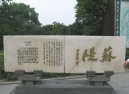

-
东坡肉相传为北宋词人苏东坡所创制。
宋神宗熙宁十年四月，苏轼赴任徐州知州。七月七日，黄河在澶州曹村埽一带决口，至八月二十一日洪水围困徐州。苏轼以身卒之，亲荷畚插，率领禁军武卫营，和全城百姓抗洪筑堤保城。经过七十多个昼夜的艰苦奋战，终于保住了徐州城。全城百姓无不欢欣鼓舞，他们为感谢这位领导有方，与徐州人民同呼吸、共存亡的好知州，纷纷杀猪宰羊，担酒携菜上府慰劳。苏轼推辞不掉，收下后亲自指点家人制成红烧肉，又回赠给参加抗洪的百姓。百姓食后，都觉得此肉肥而不腻、酥香味美，一致称他为“回赠肉”。此后，“回赠肉”就在徐州一带流传，并成徐州传统名菜。
-

苏东坡与佛印在河边散步，他们俩看到一只野狗在河里啃骨头。苏东坡灵机一动，就想捉弄一下佛印，摇头晃脑地说：“狗啃河上（和尚）骨”，然后得意地看着佛印。佛印自然是看透了苏轼的目的，但是依然很淡定的看着苏轼，这一看，看到苏东坡手里的纸扇上写着东坡的诗作，于是就伸手夺过纸扇扔到河里，又是慢悠悠地说：“水漂东坡诗（尸）”
-
东坡家与佛印家隔了一条河，有一天，苏东坡作诗一首赞佛——稽首天中天，毫光照大千。八风吹不动，端坐紫金莲。他派个门童把这首诗送到河对面那里，向佛印显摆显摆。谁知道佛印竟然回复了两个字“放屁”让门童带回来。苏轼当然生气啊，二话不说便渡河亲自找佛印理论.苏东坡怒斥：你作为一个和尚，居然说出这样粗俗的话，真是有辱斯文
佛印也不慌，慢悠悠地说：“八风吹不动，一屁过江来”。
-

《元史》记载，元祐四年（1089）苏东坡任杭州刺史时，曾疏浚西湖，并利用挖出的淤泥葑草堆筑起一条南北走向的堤岸。苏东坡主持修筑的堤岸，大约是日后南起南屏山麓、北至栖霞岭下这一条堤岸的雏形。虽说是雏形，但是，构成这一条堤岸最著名的六条桥，即映波、锁澜、望山、压堤、东浦、跨虹，都已经有了。据说，这些名字都出自苏东坡的锦心绣口
-
苏轼入狱后，神宗皇帝为了试探他有没有仇恨天子之意，特派一个小太监装成犯人入狱和东坡同睡。白天吃饭时，小太监用言语挑逗他，苏轼牢饭吃得津津有味，答说：“任凭天公雷闪，我心岿然不动！”
夜里，他倒头睡，小太监又撩拨道：“苏学士睡这等床，岂不可叹？”苏轼不理不会，用鼾声回答。小太监在第二天一大早推醒他，说道：“恭喜大人，你被赦免了。”要知道，那一夜可是危险至极啊。只要苏轼有一点牢骚和吃不香睡不稳的异样举动，危在旦夕。